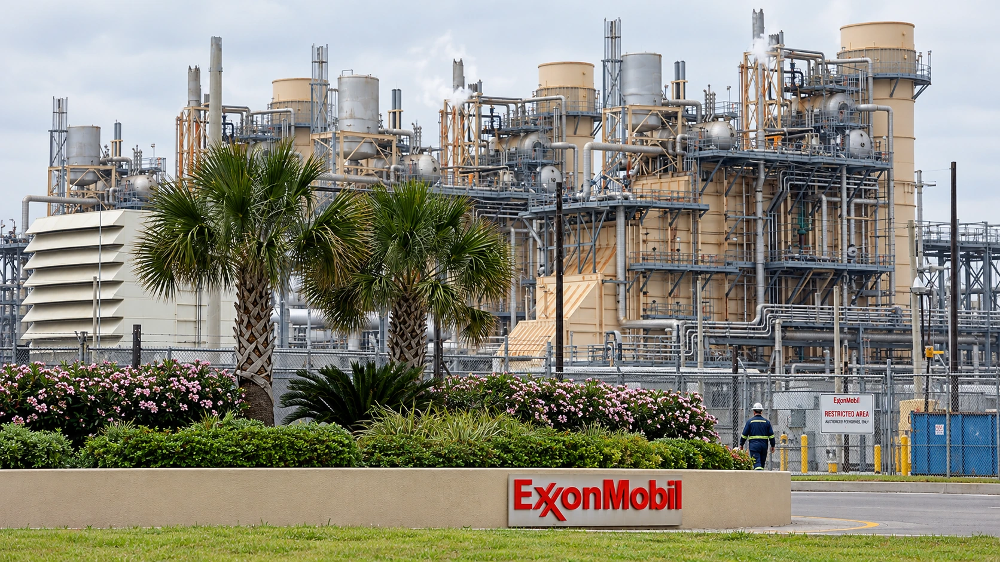

Exxon and Chevron’s Refining Boom Turns Fuel Shortages Into Cash
Exxon and Chevron beat profit estimates as fuel-making margins surged. Their cash windfall highlights the gap between crude supply and refinery capacity.

ExxonMobil and Chevron beat quarterly profit expectations Friday as the business of turning crude into usable fuel became an unusually powerful earnings engine. The results show why an oil company can benefit from a shortage of refinery capacity even when its production business faces a less favorable comparison. For households and businesses buying fuel, the same imbalance raises costs.
The immediate story is a refining windfall, rather than a uniform improvement across every energy business. Disruptions to global fuel supplies have made reliable operating plants more valuable. Reuters reported that conflict-related interruptions, including damage to refineries and the effective closure of the Strait of Hormuz, helped widen margins. Those conditions can reward available capacity without signaling that the broader economy is strengthening.
Fuel-making profits move to the foreground
Exxon reported $15.4 billion in third-quarter net income and $17.5 billion on its adjusted measure. Its Energy Products division generated $7.169 billion in reported earnings, narrowly exceeding the $7.088 billion earned by upstream production. On the adjusted basis, Energy Products contributed $9.053 billion against upstream’s $7.308 billion. The ranking holds under both definitions, although the amounts differ substantially.
That distinction matters for comparisons. Reported earnings incorporate items that management excludes from adjusted results, and investors should not mix one segment’s adjusted number with another segment’s reported number. The segment tables show a business whose earnings composition shifted toward fuel manufacturing, alongside a total profit number that needs its accounting definition attached.
A refinery buys or receives crude and converts it into products such as gasoline and diesel. Its economics depend partly on the difference between input costs and product prices. TTN’s explanation of the crack spread describes that relationship before many operating costs. Expensive crude alone therefore does not establish that a refinery is enjoying a better margin; the price of the finished fuel also matters.
High utilization makes available capacity count
Exxon said its US Gulf Coast refineries achieved 100% crude-unit utilization during the quarter. Chevron reported nearly 98% utilization at its US refineries and record crude throughput of roughly 1.09 million barrels a day. Running an existing plant reliably can bring a quicker supply response than building an entirely new refinery, which requires investment, construction and a much longer planning horizon.
Chevron’s reported downstream earnings reached $4.931 billion, compared with $1.137 billion a year earlier. Its total reported earnings were $9.924 billion, while adjusted profit was approximately $10.4 billion, or $5.28 per diluted share. Downstream includes more than the physical act of refining, so its earnings should not be treated as a direct measurement of the margin on each barrel processed.
The company also reported lower total oil-equivalent production than a year earlier. That combination is useful: stronger earnings can reflect better realizations and margins even without greater overall output. An investor looking only at barrels produced would miss a substantial part of the quarter’s financial change. Conversely, higher profit does not demonstrate that physical supply constraints have disappeared.
Cash generation and shareholder payments are separate decisions
Exxon generated $25.7 billion in operating cash flow and $19.1 billion in company-defined free cash flow. Its shareholder distributions totaled $9.4 billion. Chevron reported $16.0 billion in operating cash flow and $12.0 billion in free cash flow. These are related measures, but neither earnings nor operating cash alone represents the amount that can be distributed after investment and other obligations.
Company definitions also deserve attention. As TTN’s free-cash-flow guide explains, the treatment of investment, disposals and working capital can affect comparisons. Chevron separately reported an adjusted cash-flow measure that includes additional adjustments. Comparing like-for-like measures is more informative than choosing whichever presentation makes the quarter look strongest.
Both firms used the favorable conditions to strengthen their balance sheets. Reuters reported that Exxon reduced debt by $8 billion during the quarter; Chevron’s release put its quarterly net-debt reduction at $7.8 billion. Debt repayment preserves financial room for weaker markets. It also means that a large increase in quarterly cash does not automatically flow through to an equally large increase in shareholder payouts.
A strong quarter does not settle the next one
Exxon announced planned 2027 share repurchases of $20 billion, subject to reasonable market conditions. That is a future allocation plan, separate from cash already returned this quarter. Refining profits can change as damaged capacity returns, fuel demand shifts or input and product prices move at different speeds. High utilization is valuable, but it also leaves less unused equipment available to provide an immediate increase in output.
For US investors, Friday’s reports sharpen the distinction between owning an integrated energy producer and taking a view on crude prices alone. Production, fuel manufacturing, financing and capital allocation can pull earnings in different directions. The next useful comparison is whether strong operating performance and balance-sheet improvement persist as supply conditions change, rather than whether this quarter’s exceptional margins can simply be repeated.
Sources and methodology
Sources checked October 30, 2026. Official decisions, company statements and reported findings are attributed in the text. Financial and operational implications are TTN editorial analysis.